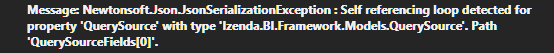

Serialization¶
Loop Reference Handling¶
Loop Reference Handling can happen when serialize QuerySource or QuerySourceField by Json SerializeObject without setting ignore for JsonSerializerSettings.
Sample code that cause this issue:
var querySource = new QuerySource { Id = Guid.NewGuid(), Name = "Table 1" }; var querySourceField = new QuerySourceField { Id = Guid.NewGuid(), Name = "Field 1" }; // make loop reference querySource.QuerySourceFields.Add(querySourceField); querySourceField.QuerySource = querySource; // has no serializer setting => cause error var querySourceJson = JsonConvert.SerializeObject(querySource);

Fig. 32 Loop Reference Handling Error Message
Configure JsonSerializerSettings.Ignore to ignore loop reference handling case.
var querySource = new QuerySource
{
Id = Guid.NewGuid(),
Name = "Table 1"
};
var querySourceField = new QuerySourceField
{
Id = Guid.NewGuid(),
Name = "Field 1"
};
// has serializer setting
JsonSerializerSettings jsonSetting = new JsonSerializerSettings();
jsonSetting.ReferenceLoopHandling = ReferenceLoopHandling.Ignore;
var querySourceJson = JsonConvert.SerializeObject(querySource, jsonSetting);